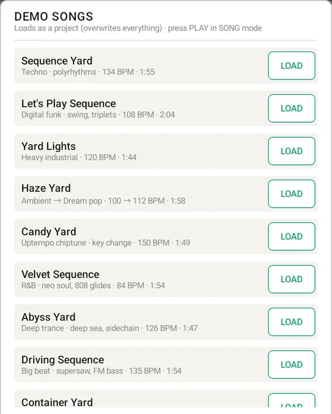
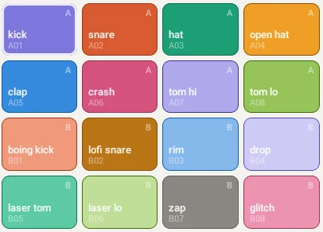
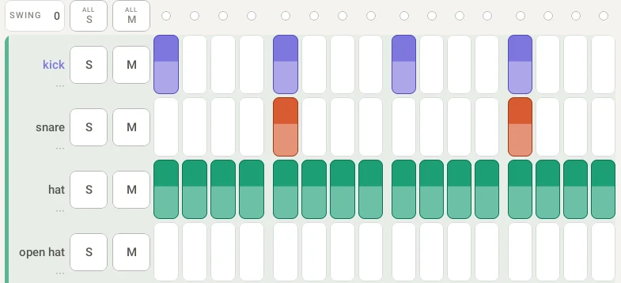
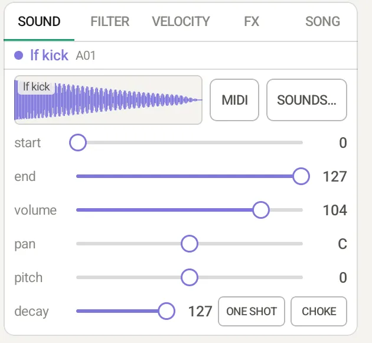
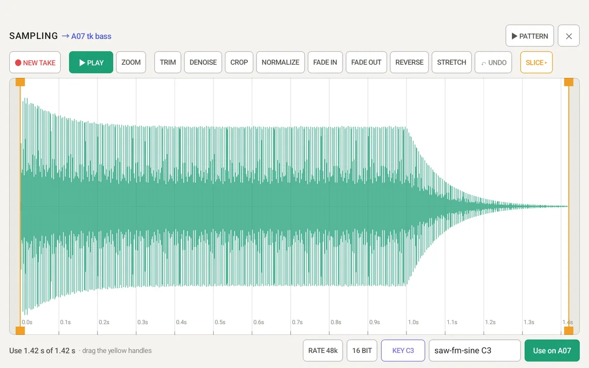
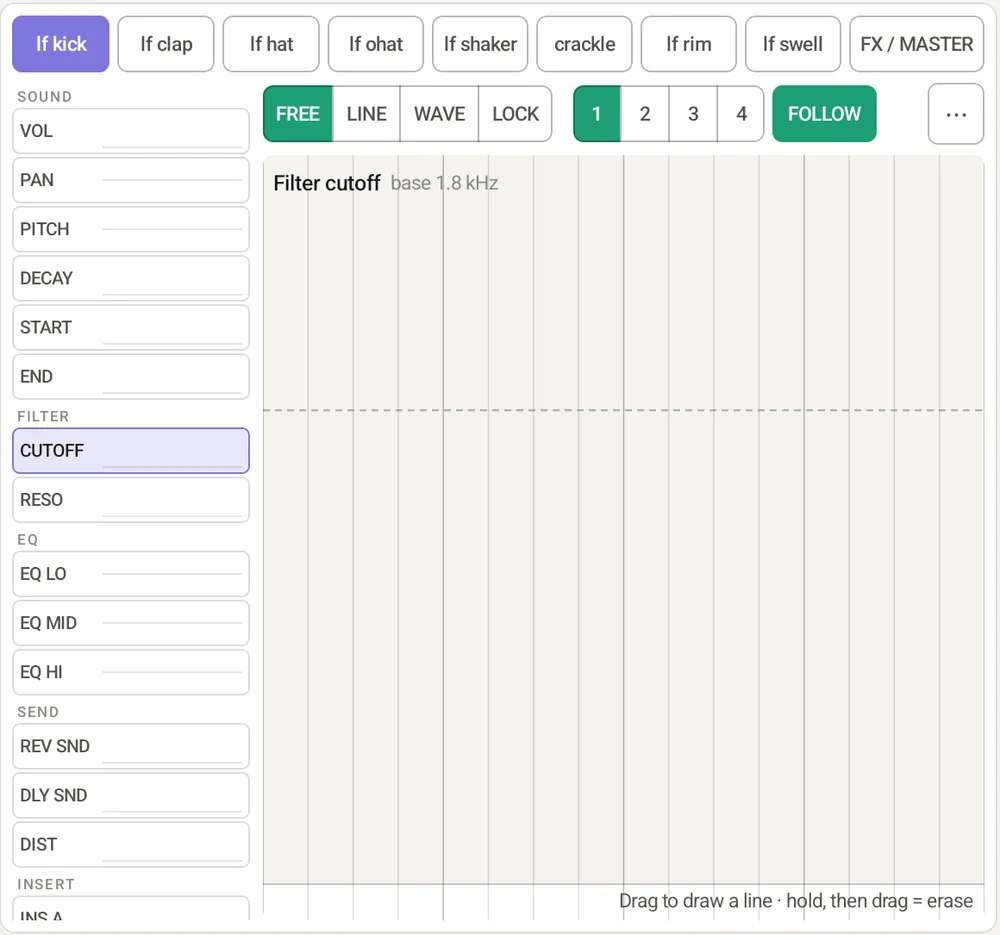

DBR-1
Quick Start — from your first sound to a finished song
Don't worry about mistakes: ↶ at the top undoes the last change.
- Track = one instrument (kick, snare…)
- Step = a box where a sound plays (16 per bar)
- Pattern = a looping phrase (00–99)
- Song = patterns in a row, making a track
"Phone:" shows where to tap on a smartphone.
1Listen to a demo song
Start by hearing songs made with DBR-1 alone.
- Tap LOAD at the top left (Phone: LOAD in ≡)
- Choose Demo songs… and tap LOAD next to a song
- Tap ▶ to play, and again to stop

2Play some sounds
Tap the pads to hear what's inside.
- Tap the 16 pads on the right (Phone: PADS on the left)
- Tapping a track name on the left plays its sound too
- A / B switches to the other 8 tracks

3Program a beat
Tap the boxes to build a rhythm.
- Tap ▶ so it keeps playing
- On the kick row, tap steps 1, 5, 9 and 13 → "boom, boom, boom, boom"
- Snare on 5 and 13. For the hat, swipe across the row to fill it in one go
- Tap the BPM number at the top right to change the speed

4Load a template beat
Not sure what to play? Start from a classic beat of a genre.
- LOAD → Templates…
- Choose a genre (Hip-Hop, House, Techno…)
- Choose BASIC and the beat goes into the current pattern
5Change the kit's sounds
Swap a track's sound for one you like.
- Tap the name of the track you want to change
- Tap SOUNDS… in the SOUND tab (Phone: SOUND on the left)
- Preview with ▶, then tap a name to put it on the track

5-ATry sampling
Record your voice or any sound around you and use it on a track.
- In the SOUNDS… screen, tap ● Record…
- ● REC to record, ■ STOP to stop
- Drag the yellow handles on the waveform to pick the part you want (TRIM cuts the silence at both ends)
- Tap the button that says Use on A01 (or your track) to put it on the track

5-BTry GENERATE
Combine waveforms into a sound of your own.
- In the SOUNDS… screen, tap ✦ Generate… (Phone: ✦ GEN)
- Choose a starting sound in WAVE A (BASS, PIANO, KICK…), or let 🎲 RANDOM pick one
- Choose a note or chord in KEY
- USE → EDIT… → Use on … puts it on the track
6Draw some automation
Draw how a sound moves. Here we make it sway left and right.
- Tap AUTO at the top (Phone: AUTO on the left)
- Pick a track, then PAN in the parameter list
- Choose WAVE → SIN and swipe up or down on the drawing area
- Tap ▶: the sound sways from side to side

7Make more patterns
For a song, make a slightly different pattern.
- Tap the pattern number (00) at the top → Duplicate to next empty copies the pattern to the next number
- Add or clear a few steps in the copy to make it different
8Make a song
Put patterns in order to make a whole song.
- Open the SONG tab at the lower right (Phone: SONG on the left)
- Use + ADD to add patterns in order (for example 00 → 00 → 01)
- − + set how many times each one repeats
- Set PLAY: SONG and tap ▶ to hear it from start to end

9Export the song
Turn your song into an audio file to listen to or send.
- SAVE → Export / record video… (Phone: in ≡)
- WHAT: SONG. FORMAT: M4A (to send) or WAV (to edit)
- Export, then Share to send it to a chat app, email and more

10Record your play as a video
Turn the screen and sound into a video and post it.
- In Export / record video…, set WHAT to RECORD and FORMAT to MP4 VIDEO
- Tap ● Start recording and play
- Tap ■ STOP at the top left → Share to X, Instagram, TikTok and more
✓Save your work
Give your song a name and keep it.
- SAVE → Project (Phone: SAVE in ≡)
- The first time, choose a folder to save in (only once)
- Type a name and tap OK
Done? There is much more to try: effects (FX), the performance screen (PERF), MIDI and more are all in the user manual.